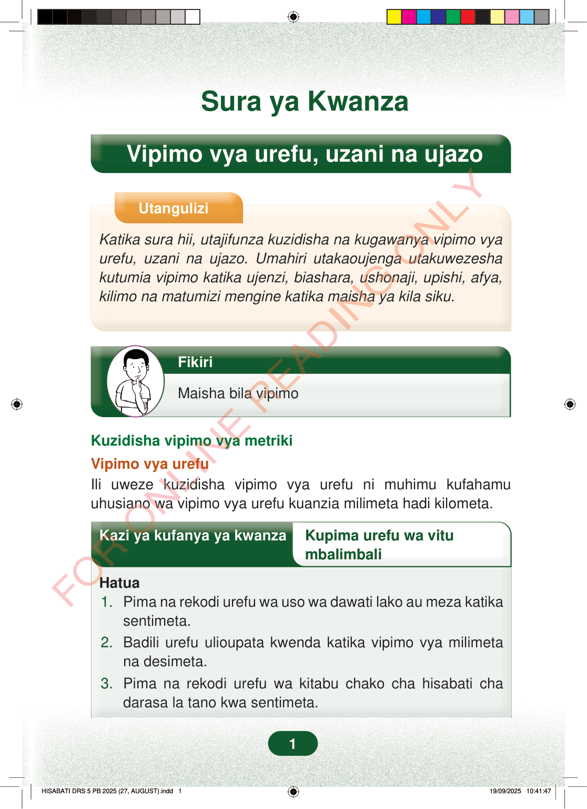

Sura ya KwanzaVipimo vya urefu, uzani na ujazoUtanguliziKatika sura hii, utajifunza kuzidisha na kugawanya vipimo vyaurefu, uzani na ujazo. Umahiri utakaoujenga utakuwezeshakutumia vipimo katika ujenzi, biashara, ushonaji, upishi, afya,kilimo na matumizi mengine katika maisha ya kila siku.FikiriMaisha bila vipimoKuzidisha vipimo vya metrikiVipimo vya urefuIli uweze kuzidisha vipimo vya urefu ni muhimu kufahamuuhusiano wa vipimo vya urefu kuanzia milimeta hadi kilometa.Kazi ya kufanya ya kwanzaKupima urefu wa vitumbalimbaliHatua1.Pima na rekodi urefu wa uso wa dawati lako au meza katikasentimeta.2.Badili urefu ulioupata kwenda katika vipimo vya milimetana desimeta.3.Pima na rekodi urefu wa kitabu chako cha hisabati chadarasa la tano kwa sentimeta.1
Sura ya Kwanza
Vipimo vya urefu, uzani na ujazo
Utangulizi
Katika sura hii, utajifunza kuzidisha na kugawanya vipimo vya urefu, uzani na ujazo. Umahiri utakaoujenga utakuwezesha kutumia vipimo katika ujenzi, biashara, ushonaji, upishi, afya, kilimo na matumizi mengine katika maisha ya kila siku.
Fikiri
Maisha bila vipimo
Kuzidisha vipimo vya metriki
Vipimo vya urefu Ili uweze kuzidisha vipimo vya urefu ni muhimu kufahamu uhusiano wa vipimo vya urefu kuanzia milimeta hadi kilometa.
Kazi ya kufanya ya kwanza Kupima urefu wa vitu
mbalimbali
Hatua
1. Pima na rekodi urefu wa uso wa dawati lako au meza katika sentimeta. 2. Badili urefu ulioupata kwenda katika vipimo vya milimeta na desimeta. 3. Pima na rekodi urefu wa kitabu chako cha hisabati cha darasa la tano kwa sentimeta.
1
Sura ya KwanzaVipimo vya urefu, uzani na ujazoUtangulizi unaosema sura hii inafundisha kuzidisha na kugawanya vipimo vya urefu, uzani na ujazo, na kutumia vipimo katika maisha ya kila siku kama ujenzi, biashara, ushonaji, afya na kilimo.UtanguliziKatika sura hii, utajifunza kuzidisha na kugawanya vipimo vya urefu, uzani na ujazo.Umahiri utakaoujenga utakuwezesha kutumia vipimo katika ujenzi, biashara, ushonaji, upishi, afya, kilimo na matumizi mengine katika maisha ya kila siku.Mtoto anaonekana akiwaza chini ya kichwa cha Fikiri, na ujumbe unasema: Maisha bila vipimo.FikiriMaisha bila vipimoKuzidisha vipimo vya metrikiVipimo vya urefuIli uweze kuzidisha vipimo vya urefu ni muhimu kufahamu uhusiano wa vipimo vya urefu kuanzia milimeta hadi kilometa.Kazi ya kwanza ya kupima urefu wa vitu mbalimbali. Hatua zake ni kupima urefu wa dawati au meza kwa sentimeta, kubadili urefu huo kwenda milimeta na desimeta, na kupima urefu wa kitabu cha hisabati kwa sentimeta.Kazi ya kufanya ya kwanzaKupima urefu wa vitu mbalimbaliHatua1. Pima na rekodi urefu wa uso wa dawati lako au meza katika sentimeta.2. Badili urefu ulioupata kwenda katika vipimo vya milimeta na desimeta.3. Pima na rekodi urefu wa kitabu chako cha hisabati cha darasa la tano kwa sentimeta.